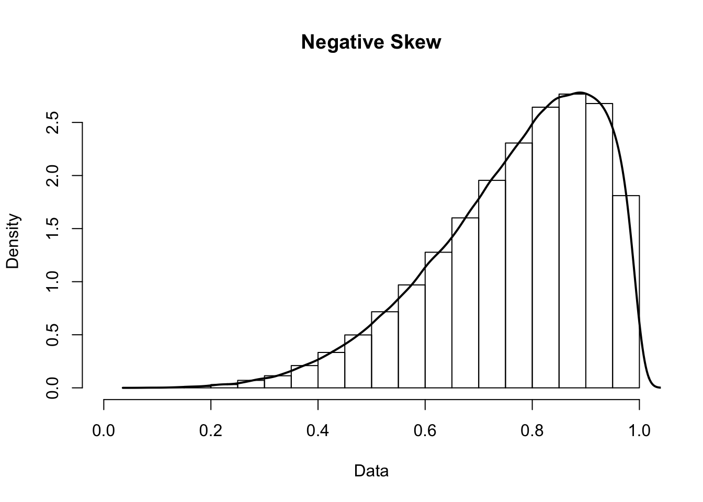

Chapter 4 Describing Data
4.1 Central Tendency
Measures of central tendency are those that attempt to describe where most of the data lies. Another way of thinking about is this: if you were to pull a number from a data set at random and guess which one you chose, how would you do so? The best way is to guess the value of one of the measures of central tendency (of which there are a few).
4.1.1 Common Measures of Central Tendency
4.1.1.1 Mean
The mean is the number that is closest to all other numbers in a set. You are most likely familiar with it being described as the average. The mean is computed with the following formula:
\(\Large Mean = \frac{sum\ of\ scores}{number\ of\ scores}\)
The mean of a variable can be written as the variable with a bar over the top: \(\bar X\).
In mathematical notation, the formula looks like:
\(\Large \bar X = \frac{\sum X_i}{N}\)
4.1.1.2 Median
Imagine you took all the numbers in a set put them in order. The median is the middle number. In the set below, it is 31.
\[21,\ 23,\ 25,\ 31,\ 34,\ 35,\ 500\]
This is contrasted by the mean of this set, which would be:
\(Mean = \frac{21 + 23 + 25 + 31 + 34 + 35 + 500}{7} = 95.57\)
The median is not as sensitive to more extreme numbers like the mean is. For this reason, you will often here people talk about median income instead of mean income (high-earners throw off the mean).
Just to drive the point home further, we could change 500 to 1,000,000. The mean would then become 142881.3 but the median would stay at 31.
4.1.1.3 Mode
The mode is the most occurring number is a set.
Think m(ost)o(ccurring)de.
It’s easy to calculate. Simply choose the number that occurs most often in the set. Similar to the median, the mode is not as sensitive to extreme scores.
4.2 Variability
One number isn’t usually great at describing a data set. Sure, the mean might be 50, but what about the other numbers? That is where variability comes in. Variability describes how the scores vary or differ from one another.
4.2.1 Common Measures of Variability
4.2.1.1 Range
The range of data is defined by the lowest score and the highest score, as well as the difference between them. Looking at the range of data can be helpful because it intuitively shows how spread out the data is.
4.2.1.2 Standard Deviation
Standard deviation describes how much each score differs from the mean, on average. This is used in many statistical analyses and is worth being familiar with.
\(\Large Standard\ Deviation = \sqrt{\frac{(score\ 1 - mean)^2 + (score\ 2 - mean)^2 + ...}{number\ of\ scores}}\)
In mathematical notation, this looks like:
\(\Large s = \sqrt{\frac{\sum (X_i - \bar X)^2}{N}}\)
Waaaaaaaaaait. I said the standard deviation was just an average, right? Why are things being squared and square rooted?
If we were to sum all of the differences between each score and the mean, they would typically cancell out and equal zero (scores below the mean will give a negative difference, while scores above the mean will give a positive difference).
So, they must be squared. But why are we square rooting things too?!?! That makes it easier to interpret. If we didn’t, we would be interpreting the average square distance from the mean. I don’t know about you, but I’m not smart enough for that to make intuitive sense. Instead, if we square root it, we can interpret it as the average distance from the mean, which makes much more sense.
4.2.1.3 Variance
What if we didn’t take the square root in that last step when calculating the standard deviation? That would leave us with the variance, the average squared distance from the mean.
\(\Large s^2 = \frac{\sum (X_i - \bar X)^2}{N}\)
The variance and standard deviation are very similar and easily mixed up. Their relationship looks like this:
\(\Large s = \sqrt{s^2}\)
Be sure not to mistake them for eachtother (it’s really easy to do so but devastating to your analyses).
4.3 In Populations
Measures of central tendency and variability can also be applied to populations. However, it is important to note once again how the notation differs when we are talking about a population instead of a sample.
For the mean, we use the greek letter mu:
\(\Large \mu = \frac{\sum X_i}{N}\)
For the standard deviation, we use the greek letter sigma:
\(\Large \sigma = \sqrt{\frac{\sum (X_i - \mu)^2}{N}}\)
Notice also that instead of using \(\bar X\) in this equation, we use the population mean, \(\mu\).
For the standard deviation, we use the greek letter sigma squared:
\(\Large \sigma^2 = \frac{\sum (X_i - \mu)^2}{N}\)
4.4 Skewness and Kurtosis
Remember how we described certain distributions as normal? There are also ways to describe how a distribution deviates from normality.
Skewness occurs when one tail of a distribution is longer than the other. Positive skew is when the right tail is longer, and negative skew is when the left tail is longer.

Kurtosis occurs when a distribution is flatter or more pointed that normal. A pointed distribution is leptokurtic, while a flatter distribution is platykurtic.
4.5 Relative Scores
Sometimes it is beneficial for us to evaluate a score in the context of all of the other scores.
4.5.1 Percentiles
One way to compare scores the all others is with percentiles. Percentiles note the percentage of other scores that a particular score is above. Does that sound familiar? It’s very similar to the idea of cumulative relative frequencies.
We can refer to the 90th percentile in a data set, which indicates the score at which 90% of other scores fall below. We can also say that someone scored in the 90th percentile, which indicates that they scored above 90% of the other scores. Percentiles are often used in standardized testing.
4.5.2 Standard Scores
In addition to percentiles, standard scores can also be used to evaluate a score in the context of the other scores. A standard score tells us how many standard deviations above (if it is positive) or below (if it is negative) the mean a particular score is.
\(\Large Standard\ Score = \frac{score - mean}{standard\ deviation}\)
In mathematical notation, the formula looks like:
\(\Large Standard\ Score = \frac{X - \bar X}{s}\)